Back to Projects

SQL: Advanced Analysis with CRISP-DM
Window functions carry the SQL. CRISP-DM carries the order. Three years of weekly prices as the case.
Window functions carry the SQL. CRISP-DM carries the order. Three years of weekly prices as the case.
The first project was a simple exploratory analysis on seventeen commands. This one is an analysis. It takes a published number apart and asks whether a buyer can act on it.
That needs window functions, which hold a row and compare it against another. The order comes from CRISP-DM, the method many real projects follow. The next cell sets it out.
CRISP-DM, the Cross-Industry Standard Process for Data Mining, keeps an analysis from becoming a tour of techniques. It sets six phases, and each one answers a defined question before the next one starts.
CRISP-DM is a cycle. Each loop returns to the phase before it: data refines the question, the model refines the preparation, evaluation returns the answer to the business. Every turn removes noise.
No query yet
A produce buyer holds one week of stock and sets one price. Both decisions need one answer.
Does price move volume, and by how much in the market I actually buy for?
The published answer is -0.34, weak enough to drop price as a lever. The next two lines are written before the first query, so no result sets its own bar.
Phase five returns the verdict, and the verdict decides the recommendation.
COUNTCASE WHENUNION ALLViews as tests
Every data set arrives claiming to be clean. Seven rules test that, and they live in a view so the next person runs them.
The rules, as a view
CREATE OR REPLACE VIEW data_quality_checks AS
WITH checks AS (
SELECT 1 AS rule_no, 'No null in any key field' AS rule,
COUNT(*) FILTER (WHERE sale_date IS NULL OR region IS NULL
OR avocado_type IS NULL OR total_volume IS NULL) AS offenders
FROM avocado_prices
UNION ALL
SELECT 2, 'One row per date, region and type',
(SELECT COUNT(*) FROM (
SELECT 1 FROM avocado_prices
GROUP BY sale_date, region, avocado_type HAVING COUNT(*) > 1) d)
UNION ALL
SELECT 3, 'row_id is unique',
(SELECT COUNT(*) - COUNT(DISTINCT row_id) FROM avocado_prices)
UNION ALL
SELECT 4, 'Volume equals the sum of its parts',
COUNT(*) FILTER (WHERE ABS(total_volume
- (plu4046 + plu4225 + plu4770 + total_bags)) > 1)
FROM avocado_prices
UNION ALL
SELECT 5, 'sale_year agrees with sale_date',
COUNT(*) FILTER (WHERE sale_year <> EXTRACT(YEAR FROM sale_date))
FROM avocado_prices
UNION ALL
SELECT 6, 'No zero or negative price or volume',
COUNT(*) FILTER (WHERE average_price <= 0 OR total_volume <= 0)
FROM avocado_prices
UNION ALL
SELECT 7, 'Every series has all 169 weeks',
(SELECT COUNT(*) FROM (
SELECT 1 FROM avocado_prices
GROUP BY region, avocado_type
HAVING COUNT(DISTINCT sale_date) <> 169) s)
)
SELECT
rule_no,
rule,
offenders,
CASE WHEN offenders = 0 THEN 'pass' ELSE 'FAIL' END AS verdict
FROM checks;Run them
SELECT rule_no, rule, offenders, verdict
FROM data_quality_checks
ORDER BY rule_no;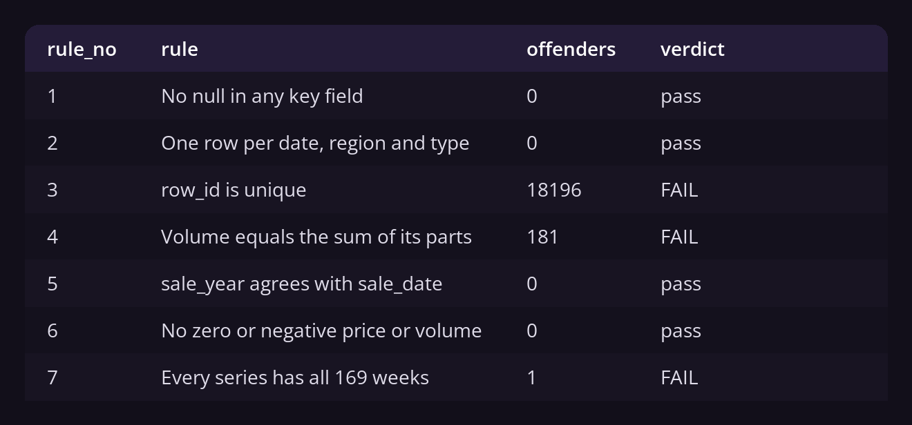
Four pass, three fail. A suite where everything passes asks nothing.
row_id is not an id. 18,249 rows hold 53 distinct values, because the week counter restarts inside every region, type and year. A join on it destroys the data in silence.
181 rows report a total_volume that is not the sum of its parts, by up to 7.9%. Use the reported total.
One series is short. That is the failure that matters, and it bites in phase three.
The shape underneath all of that
SELECT
COUNT(*) AS weekly_rows,
COUNT(DISTINCT region) AS regions,
COUNT(DISTINCT avocado_type) AS types,
MIN(sale_date) AS first_week,
MAX(sale_date) AS last_week
FROM avocado_prices;The region column looks like a list of markets. It holds eight multi-state aggregates beside the metros they already contain, plus a TotalUS row holding everything.
Add the regions up and compare
SELECT
'Sum of every region except TotalUS' AS measure,
ROUND(SUM(CASE WHEN region <> 'TotalUS' THEN total_volume END)) AS units
FROM avocado_prices
UNION ALL SELECT 'Reported TotalUS',
ROUND(SUM(CASE WHEN region = 'TotalUS' THEN total_volume END))
FROM avocado_prices
UNION ALL SELECT 'Overstatement',
ROUND(SUM(CASE WHEN region <> 'TotalUS' THEN total_volume END)
- SUM(CASE WHEN region = 'TotalUS' THEN total_volume END))
FROM avocado_prices;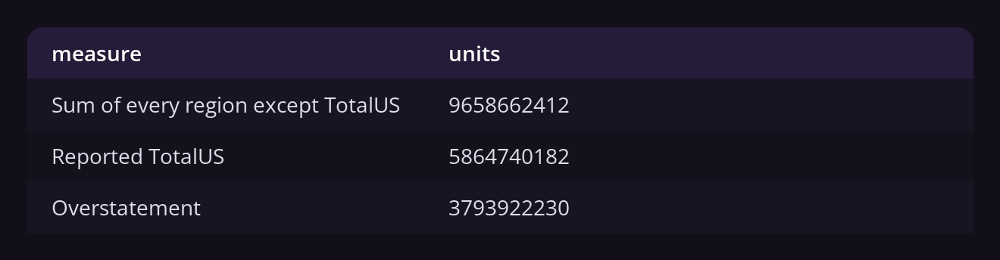
Summing every region overstates the country by 65%. No rule catches it, because nothing is malformed: the column is right and the assumption about it is wrong.
CREATE OR REPLACE VIEWLAGLayered ELTIdempotency
The loader touches nothing, so every transformation lives in the database. That makes this ELT rather than ETL, and every step readable rather than trusted.
Three layers, one job each:
avocado_prices, a table. Typed, and nothing removed.avocado_clean, a view. Safe to add up.weekly_us and report_regions, one per question.That is the medallion shape with the labels left off. Bronze, silver and gold carry machinery for scale that a 5 MB CSV does not need. The shape is worth borrowing, the vocabulary would be decoration.
The conformed layer
CREATE OR REPLACE VIEW avocado_clean AS
SELECT
sale_date,
region,
avocado_type,
average_price,
total_volume,
plu4046,
plu4225,
plu4770,
total_bags,
sale_year,
sale_year = 2018 AS is_partial_year
FROM avocado_prices
WHERE region NOT IN ('TotalUS', 'West', 'SouthCentral', 'Northeast', 'Southeast',
'GreatLakes', 'Midsouth', 'Plains', 'California');It drops the nine overlapping regions and row_id, and flags the partial year instead of deleting it: 2018 is valid weekly, invalid in a yearly average.
What each layer holds
SELECT 'avocado_prices (landing)' AS layer, COUNT(*) AS rows,
COUNT(DISTINCT region) AS regions
FROM avocado_prices
UNION ALL
SELECT 'avocado_clean (conformed)', COUNT(*), COUNT(DISTINCT region)
FROM avocado_clean
UNION ALL
SELECT 'weekly_us (consumption)', COUNT(*), 1
FROM weekly_us
UNION ALL
SELECT 'report_regions (consumption)', COUNT(*), COUNT(*)
FROM report_regions;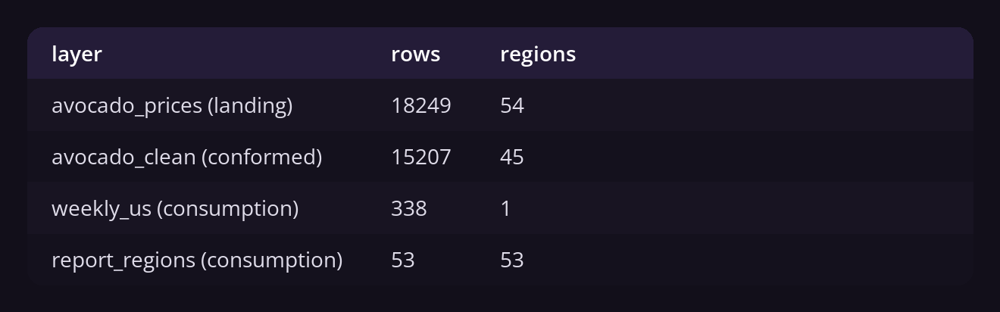
Views, not tables: the transformation is cheap and never stale. That inverts when recomputing hurts, or when somebody needs yesterday's version.
Every statement is CREATE OR REPLACE, so the script runs from the top as often as needed.
LAG(week_price, 52) assumes an unbroken weekly grid. A missing week makes the offset read the wrong date, in silence. So it gets tested.
Find any week that is not seven days after the last
WITH steps AS (
SELECT
region,
avocado_type,
sale_date,
sale_date - LAG(sale_date) OVER (
PARTITION BY region, avocado_type ORDER BY sale_date) AS days_since_previous
FROM avocado_prices
)
SELECT region, avocado_type, sale_date, days_since_previous
FROM steps
WHERE days_since_previous <> 7
ORDER BY sale_date;Organic in WestTexNewMexico jumps 14 days once and 21 once, and holds 166 weeks of 169. The windows below run on TotalUS, which is whole.
That is the argument for a preparation phase. A row count misses it, a null check misses it, and it is fatal to the technique this page uses.
CORRAVG OVERROWS BETWEENLAG(col, 52)RANKSUM OVER ()CASE WHEN
The question from phase one, asked three times, holding a different thing constant each time.
The same question at three levels
WITH by_region AS (
SELECT CORR(average_price, total_volume)::numeric AS c
FROM avocado_prices WHERE region <> 'TotalUS' GROUP BY region
),
by_region_and_type AS (
SELECT CORR(average_price, total_volume)::numeric AS c
FROM avocado_prices WHERE region <> 'TotalUS' GROUP BY region, avocado_type
)
SELECT 'Everything pooled' AS held_constant,
ROUND(CORR(average_price, total_volume)::numeric, 2) AS price_volume_corr,
1 AS groups
FROM avocado_prices WHERE region <> 'TotalUS'
UNION ALL
SELECT 'Region', ROUND(AVG(c), 2), COUNT(*) FROM by_region
UNION ALL
SELECT 'Region and type', ROUND(AVG(c), 2), COUNT(*) FROM by_region_and_type;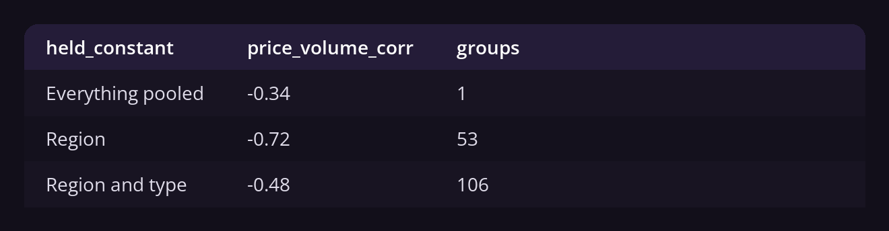
Pooled, -0.34. Inside a single market, -0.72. The pooled figure mixes 53 markets of different size and price level, and the mixing makes the number weak. For the buyer, price is twice the lever the published figure shows.
Phase one is answered. The rest describes the market that lever works in.
Four-week moving average, and the weeks that broke it
WITH weekly AS (
SELECT
sale_date,
ROUND(AVG(average_price), 2) AS week_price
FROM avocado_prices
WHERE region = 'TotalUS' AND avocado_type = 'conventional'
GROUP BY sale_date
)
SELECT
sale_date,
week_price,
ROUND(AVG(week_price) OVER (
ORDER BY sale_date ROWS BETWEEN 3 PRECEDING AND CURRENT ROW), 2) AS moving_avg_4w,
ROUND(week_price - AVG(week_price) OVER (
ORDER BY sale_date ROWS BETWEEN 3 PRECEDING AND CURRENT ROW), 2) AS gap
FROM weekly
ORDER BY ABS(week_price - AVG(week_price) OVER (
ORDER BY sale_date ROWS BETWEEN 3 PRECEDING AND CURRENT ROW)) DESC
LIMIT 6;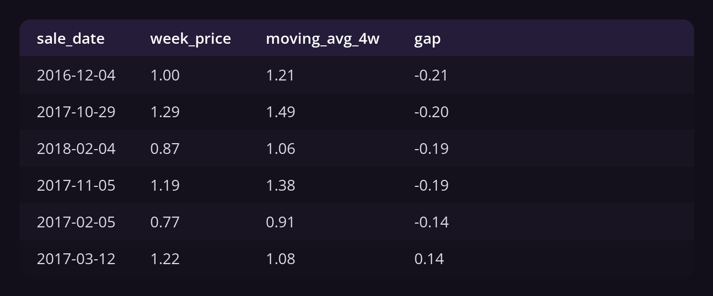
The widest gap in three years is 21 cents, so one expensive week is rarely a signal. ROWS BETWEEN 3 PRECEDING AND CURRENT ROW is what makes it a moving average and not a running one.
Every September, against the September before
WITH weekly AS (
SELECT
sale_date,
ROUND(AVG(average_price), 2) AS week_price
FROM avocado_prices
WHERE region = 'TotalUS' AND avocado_type = 'conventional'
GROUP BY sale_date
),
against_last_year AS (
SELECT
sale_date,
week_price,
LAG(week_price, 52) OVER (ORDER BY sale_date) AS same_week_last_year
FROM weekly
)
SELECT
sale_date,
week_price,
same_week_last_year,
ROUND((week_price - same_week_last_year)
/ NULLIF(same_week_last_year, 0) * 100, 1) AS pct_change
FROM against_last_year
WHERE same_week_last_year IS NOT NULL
AND EXTRACT(MONTH FROM sale_date) = 9
ORDER BY sale_date;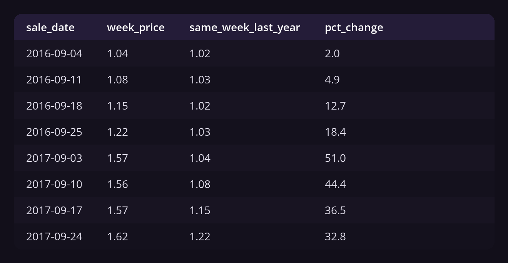
September 2017 ran 33% to 51% above September 2016, a shock invisible week to week because the rise took months. Note where the WHERE sits: filter first and LAG looks back 52 September rows, which do not exist.
The 2017 table, and the movement behind it
WITH metro_year AS (
SELECT
region,
sale_year,
SUM(total_volume) AS volume
FROM avocado_prices
WHERE region IN ('LosAngeles', 'NewYork', 'Houston', 'DallasFtWorth',
'PhoenixTucson', 'Chicago', 'Denver', 'Seattle')
AND sale_year < 2018
GROUP BY region, sale_year
),
ranked AS (
SELECT
region,
sale_year,
volume,
RANK() OVER (PARTITION BY sale_year ORDER BY volume DESC) AS rank_in_year
FROM metro_year
),
with_move AS (
SELECT
region,
sale_year,
volume,
rank_in_year,
LAG(rank_in_year) OVER (PARTITION BY region ORDER BY sale_year) - rank_in_year
AS places_gained,
ROUND((volume - LAG(volume) OVER (PARTITION BY region ORDER BY sale_year))
/ NULLIF(LAG(volume) OVER (PARTITION BY region ORDER BY sale_year), 0) * 100, 1)
AS volume_change_pct
FROM ranked
)
SELECT region, rank_in_year, ROUND(volume) AS volume, places_gained, volume_change_pct
FROM with_move
WHERE sale_year = 2017
ORDER BY rank_in_year;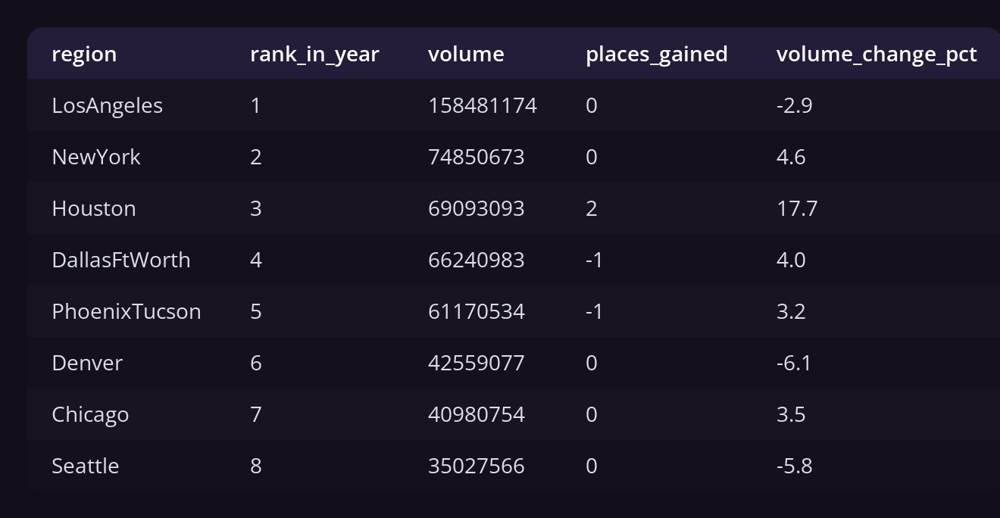
How concentrated is that?
WITH metro_volume AS (
SELECT
region,
SUM(total_volume) AS volume
FROM avocado_prices
WHERE region IN ('LosAngeles', 'NewYork', 'Houston', 'DallasFtWorth',
'PhoenixTucson', 'Chicago', 'Denver', 'Seattle')
GROUP BY region
)
SELECT
region,
ROUND(volume) AS volume,
ROUND(volume / SUM(volume) OVER () * 100, 1) AS pct_of_these_metros,
ROUND(SUM(volume) OVER (ORDER BY volume DESC) / SUM(volume) OVER () * 100, 1) AS running_pct
FROM metro_volume
ORDER BY volume DESC;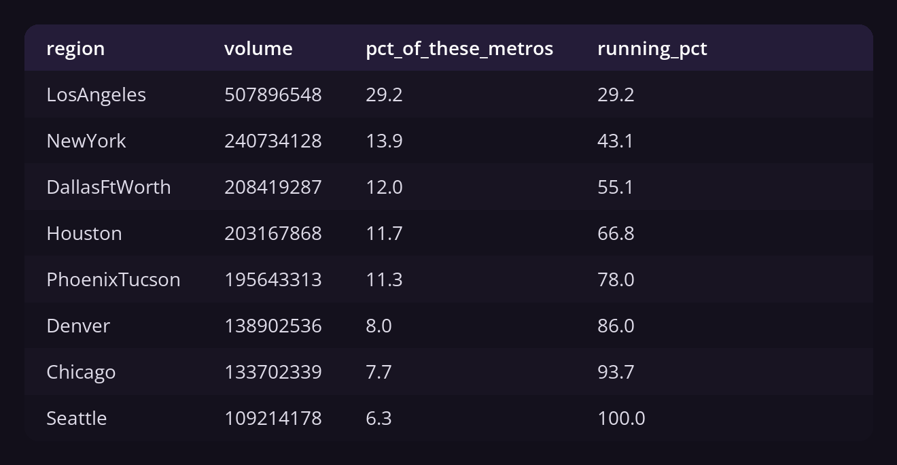
Only Houston moved, taking two places on 17.7% growth while Los Angeles shrank 2.9%. Los Angeles alone is 29.2% of these eight metros, the top three 55.1%.
Volume by price band, conventional against organic
SELECT
avocado_type,
CASE
WHEN average_price < 1.00 THEN 'Under $1.00'
WHEN average_price < 1.50 THEN '$1.00 to $1.49'
WHEN average_price < 2.00 THEN '$1.50 to $1.99'
ELSE '$2.00 and above'
END AS price_band,
COUNT(*) AS weeks,
ROUND(AVG(total_volume)) AS avg_weekly_volume
FROM avocado_prices
WHERE region <> 'TotalUS'
GROUP BY avocado_type, price_band
ORDER BY avocado_type, price_band;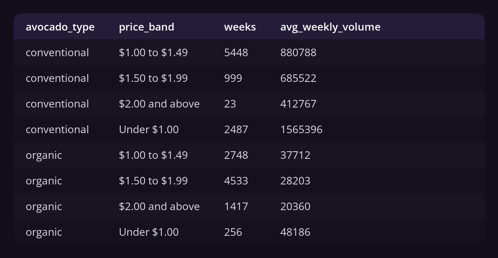
Conventional weeks under a dollar move 1.57 million units against 413,000 above two dollars, near four to one. Organic runs under two and a half to one.
The lines do not react alike, the second reason the pooled figure was meaningless.
CORRCTE (WITH)MIN, MAXFILTERCASE WHEN
A finding that exists only in the aggregate is waiting to be withdrawn. If the phase four claim is real, it holds in every year, not only across all three at once.
The same correlation, split by year
WITH by_region_year AS (
SELECT
sale_year,
region,
CORR(average_price, total_volume)::numeric AS c
FROM avocado_prices
WHERE region <> 'TotalUS'
GROUP BY sale_year, region
)
SELECT
sale_year,
COUNT(*) AS markets,
ROUND(AVG(c), 2) AS avg_corr,
ROUND(MIN(c), 2) AS strongest,
ROUND(MAX(c), 2) AS weakest
FROM by_region_year
GROUP BY sale_year
ORDER BY sale_year;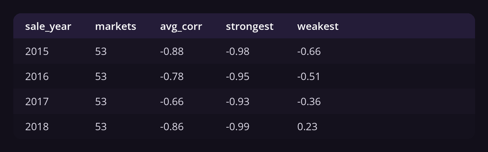
It holds. Every year averages -0.66 to -0.88 across all 53 markets, and 2017 is the softest.
The SLI by year, and the SLO verdict
WITH sli AS (
SELECT
sale_year,
region,
CORR(average_price, total_volume)::numeric AS price_volume_sli
FROM avocado_prices
WHERE region <> 'TotalUS'
GROUP BY sale_year, region
)
SELECT
sale_year,
COUNT(*) AS markets,
COUNT(*) FILTER (WHERE price_volume_sli <= -0.50) AS markets_meeting,
ROUND(100.0 * COUNT(*) FILTER (WHERE price_volume_sli <= -0.50)
/ COUNT(*), 1) AS pct_meeting,
CASE WHEN 100.0 * COUNT(*) FILTER (WHERE price_volume_sli <= -0.50)
/ COUNT(*) >= 80 THEN 'pass' ELSE 'FAIL' END AS slo_verdict
FROM sli
GROUP BY sale_year
ORDER BY sale_year;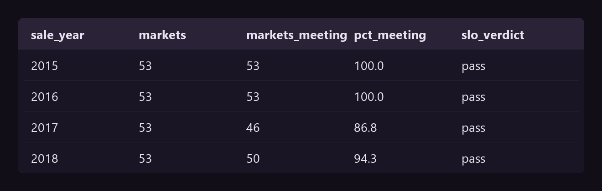
The SLO holds in all four years. 2017 is the narrow one at 86.8%, which fits the shock year, when supply set the price. The recommendation stands.
So -0.34 is not wrong from noise or from one odd year. It is wrong from what it pooled, and finding that needed one GROUP BY more than the original.
CREATE VIEWCTE (WITH)NULLIFMIN, MAXCORR
An analysis nobody can rerun is a screenshot. The last phase makes it queryable without reading any of this.
One row per region, ready to query
CREATE OR REPLACE VIEW report_regions AS
WITH base AS (
SELECT
region,
sale_date,
average_price,
total_volume,
plu4046 + plu4225 + plu4770 AS loose_units,
total_bags
FROM avocado_prices
WHERE region <> 'TotalUS'
)
SELECT
region,
COUNT(DISTINCT sale_date) AS weeks_reported,
ROUND(SUM(total_volume)) AS total_volume,
ROUND(AVG(average_price), 2) AS avg_price,
ROUND(MIN(average_price), 2) AS lowest_price,
ROUND(MAX(average_price), 2) AS highest_price,
ROUND(SUM(total_bags) / NULLIF(SUM(loose_units + total_bags), 0) * 100, 1) AS pct_bagged,
ROUND(CORR(average_price, total_volume)::numeric, 2) AS price_volume_corr
FROM base
GROUP BY region;What it returns
SELECT region, weeks_reported, total_volume, avg_price, pct_bagged, price_volume_corr
FROM report_regions
ORDER BY total_volume DESC
LIMIT 8;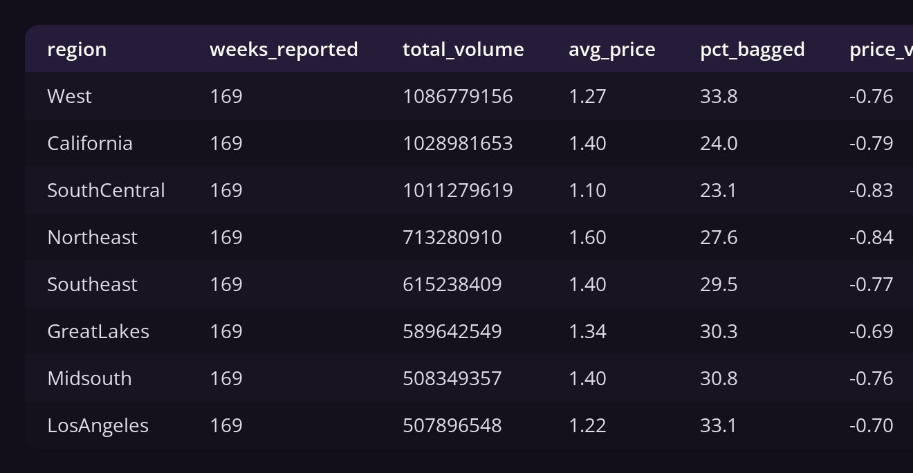
The phase four finding is now a column somebody can filter on rather than a claim in a document. NULLIF guards the bagged percentage against a region with no volume.
Six phases, seventeen queries, and a published number that does not survive one more GROUP BY.
The buyer from phase one gets a different answer. Price is a real lever in a single market, worth twice the headline figure, and blunter for organic than for conventional.
Neither correction needed a tool beyond PostgreSQL. Both came from asking what the number was compared against, and the process is what forces that question before the answer ships.